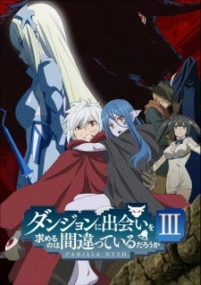
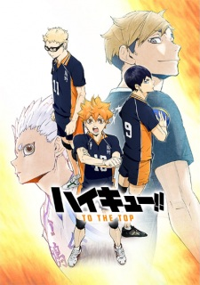
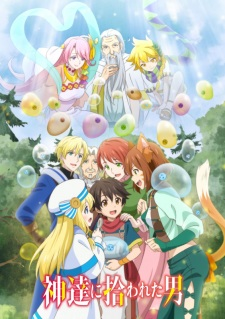
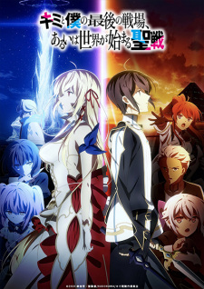

Veteran Weeb
Upcoming Fall Anime With High Expectations
Ongoing Anime Series
Danmachi
The plot of Danmachi Season 3:

The series starts with Bell Cranel striving to become a great adventurer. ... Bell Cranel gets some magical powers from Hestia who later becomes the part of her family. The series catches fire by watching the adventures done by Bell and Hestia when in the dungeon.
The Irregular At Magic Highschool

The anime series is set in the late 21st century. It seems to have been made in an alternate version of reality. As per the history, the Third World War has already taken place. It has divided the world into four superpowers – the United States of North America (USNA), the New Soviet Union, the Great Asian Alliance, and Japan.
The magic exists in this time. Thriving through the ages, it has become more polished with technology. In this 21st century, magic has been made into a systematized technology and is being taught as a technical discipline around the world. But, there is a catch. It is that genetics determine who can use magic. Not everyone can utilize magic power.
Japan has got a self-regulating magical community. A group of ten Master Clans under the government governs the magical community in Japan. The original magicians in Japan are few and limited in number. However, people have been forced into magical education and magic-related professions. There are a total of 9 magic teaching school. Each specializes in one aspect of magic.
This show mainly revolves around two siblings – Tatsuya and Miyuki Shiba. The duo gets enrolled at the First High School, a prestigious institute for magicians. The schools divide the enrolled students into two different groups based on their entrance exam scores. The top students’ group called Blooms gets the school’s First Course. The second one Weeds get the Second Course.
Getting a high score, Miyuki gets admitted to the First Course while Tatsuya couldn’t get good marks. So, he gets assigned to the Second one. Despite being magically inept, Tatsuya has got extraordinary technical knowledge, magical techniques, and physical combat abilities. These things make him ‘irregular’ at magic school separating him from other Weeds.
Haikyuu!!: To the Top
After their triumphant victory over Shiratorizawa Academy, the Karasuno High School volleyball team has earned their long-awaited ticket to nationals. As preparations begin, genius setter Tobio Kageyama is invited to the All-Japan Youth Training Camp to play alongside fellow nationally recognized players. Meanwhile, Kei Tsukishima is invited to a special rookie training camp for first-years within the Miyagi Prefecture. Not receiving any invitations himself, the enthusiastic Shouyou Hinata feels left behind.
However, Hinata does not back down. Transforming his frustration into self-motivation, he boldly decides to sneak himself into the same rookie training camp as Tsukishima. Even though Hinata only lands himself a job as the ball boy, he comes to see this as a golden opportunity. He begins to not only reflect on his skills as a volleyball player but also analyze the plethora of information available on the court and how he can apply it.
As the much-anticipated national tournament approaches, the members of Karasuno's volleyball team attempt to overcome their weak points and refine their skills, all while aiming for the top!
New Anime Series
Tonikaku Kawaai

Having grown up ridiculed for his bizarre name, Nasa Yuzaki strives to be remembered for something more. Fortunately, it seems he's on the right path, ranking first in the nation's mock exams and set to enter his high school of choice.
However, everything changes in a single night when he notices a girl across the street on his way home. Enraptured by her overwhelming cuteness, it's love at first sight for Nasa. But in his infatuated daze, he fails to notice the approaching danger speeding down the road and finds himself at death's door. Barely alive thanks to the girl's intervention, Nasa musters the courage to confess his love to her, fearing she might otherwise vanish from his life. She accepts his proposal on one condition: marriage, to which Nasa gladly accepts before passing out from his injuries. Upon waking, however, the girl is nowhere to be found.
After recovering from his injuries, Nasa tosses his previous ambitions aside and dedicates his life to finding the girl that captured his heart, yet several years pass to no avail. But one night, when an unexpected visitor comes knocking on his door, Nasa finds himself facing a woman that would forever change his world: his wife.
I'm Standing on a Million lives

Yotsuya Yuusuke along with his classmates Shindou Iu and Hakozaki Kusue have been transported to a strange and unknown world inhabited by mythological creatures. As soon as they arrive, they meet somebody calling himself the Game Master who then grants them a time-limited quest. To aid them in this quest, he also bestows Shindou and Hakozaki with the roles of a Magician and a Warrior while Yotsuya is randomly granted the role of... a Farmer?!
This is how a hectic life of adventuring began for three students who now have no choice, but to complete random quests for several phases in the fantasy world if they want to stay alive and protect the real world from the demons and monsters they encounter.
The man packed up by the Gods
Ryouma Takebayashi dies in his sleep at the age of 39 after leading a life of misfortune. Taking pity on him, three deities offer him the chance to reincarnate in a world of magic where he has only one mission: to be himself and enjoy life. They bestow upon Ryouma powerful physical abilities as well as the affinity to master all elements, and promise to watch over him. His new life as a young child officially starts when he is teleported into a forest.
Three years go by. Having spent most of his time researching slimes, Ryouma has managed to evolve unique kinds of slimes, training an army of them while developing his magic abilities. Although the young boy is happy with his hermit existence and comfortable cave home, he somewhat misses the company of humans. But after healing an injured member of a passing group of travelers from a duke's household, Ryouma is persuaded to go with them and exit the forest accompanied by his menagerie of slimes. A whole new world awaits him, where his skills as a magic user and slime tamer continue to elicit surprise and admiration.
The Last battlefield Between you and I
A great war has raged for years between the scientifically advanced Empire and Nebulis, the realm of the witches―until the youngest knight ever to receive the title of the Empire's strongest meets the princess of the rival nation. Though they are sworn enemies, the knight is taken by her beauty and dignity, and the princess is moved by his strength and way of life. Will the fighting between them ever be allowed to end?
Click this link if you want to know more